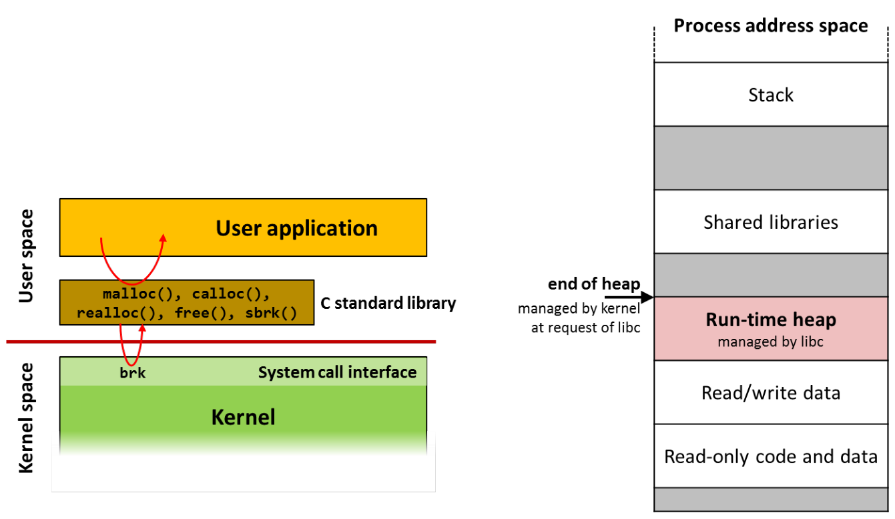
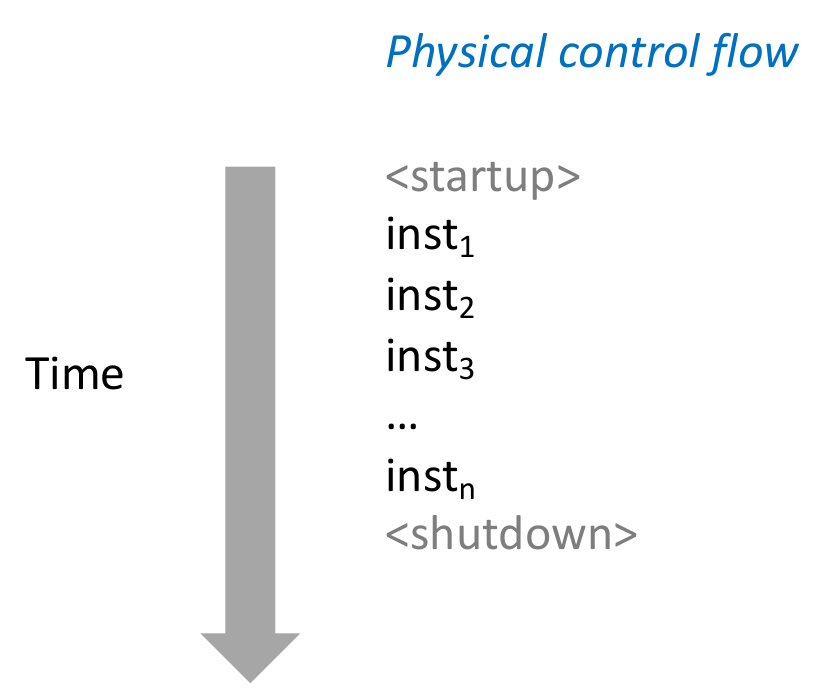
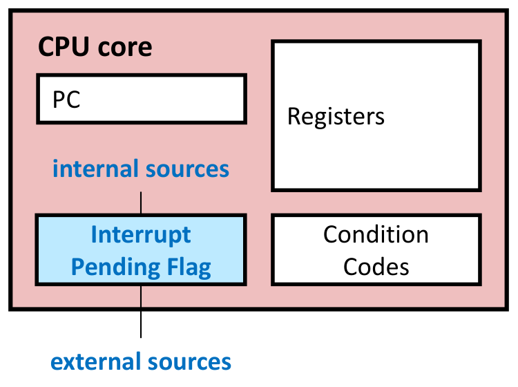
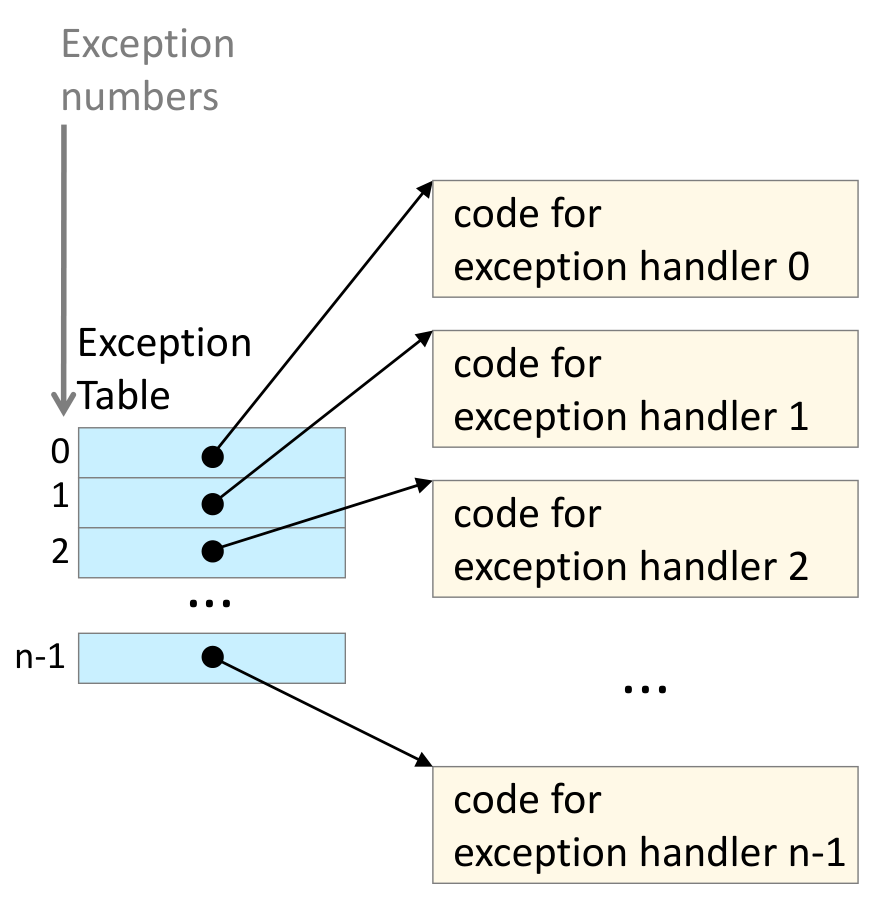
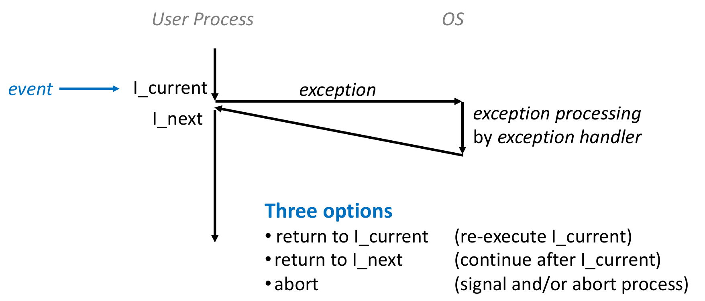
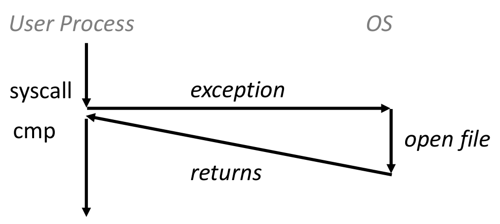
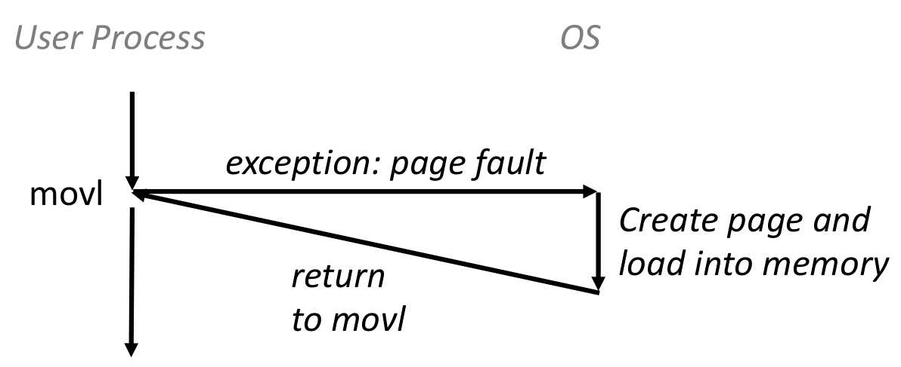
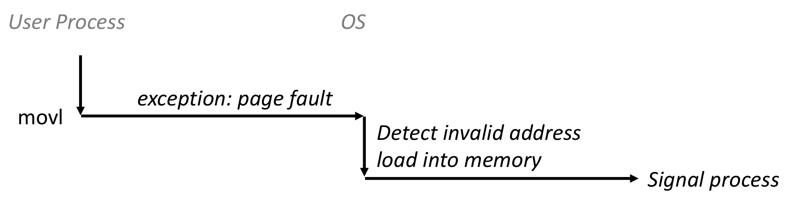
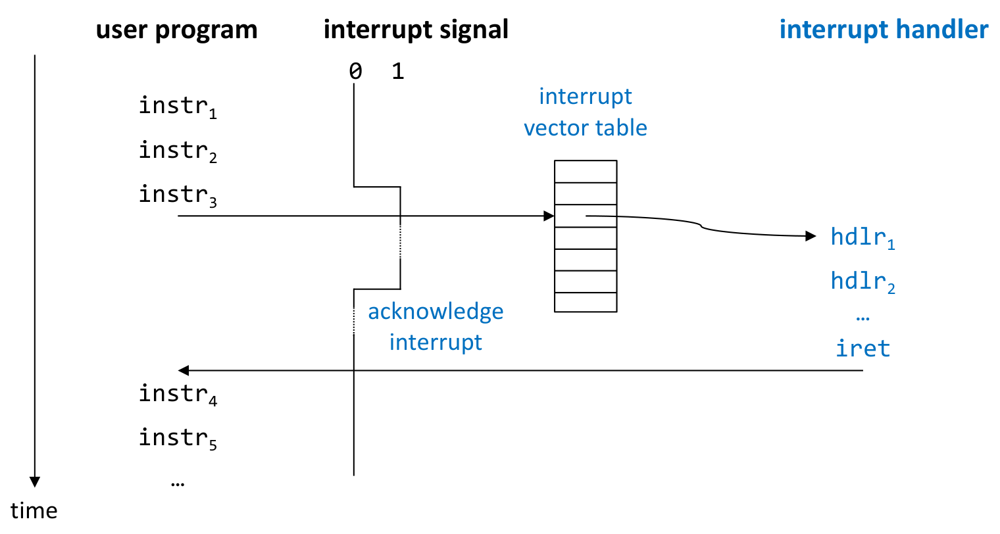

본 포스트는 서울대학교 컴퓨터공학부 시스템 프로그래밍(System Programming, M1522.000800, Fall 2026) 강의 자료 중 14강 — Process Management: Exceptional Control Flow I (총 34장)를 바탕으로, 강의를 처음 듣는 독자도 논리적 흐름을 따라갈 수 있도록 재구성한 것입니다. 이 강의는 13강(Processes)에 이어 프로세스 관리(Process Management) 단원에 속하며, 예외적 제어 흐름을 다루는 두 강의 중 Part I(Basic Concepts, Low-Level ECF (Interrupts))에 해당합니다. Part II(High-Level ECF (Signals))는 15강입니다. 원본 슬라이드는 영문으로 작성되어 있고, 본문의 대섹션은 강의의 구분 슬라이드(Exceptional Control Flow → Low-level Mechanisms: Exceptions → Module Summary)를 따랐습니다. 강의 개요 슬라이드는 둘째 부분을 Interrupts라고 부릅니다. 제어 흐름과 예외적 제어 흐름의 층위, 예외의 분류와 복귀 방식, 그리고 리눅스/x86-64 시스템 호출을 직접 부르는 hello 예제는 이 과목의 교재인 Bryant & O’Hallaron, Computer Systems: A Programmer’s Perspective (3rd ed.) 8장의 도입부와 8.1절(예외)에 대응하고, 인텔 x86의 예외 · 인터럽트 번호표는 슬라이드가 출처로 밝힌 Intel 64 and IA-32 Architectures Software Developer’s Manual의 Table 6-1입니다. 슬라이드의 셸 명령에는 옵션 앞의 하이픈이 긴 대시(
–o,–m32,–d)로 조판되어 있어 그대로 입력하면 옵션으로 인식되지 않으므로 하이픈으로 바꿔 옮겼고, 그대로는 어셈블되지 않는mylib32.s의 주석 한 줄도 바로잡은 뒤 해당 위치에 그 사실을 밝혔습니다.
한 줄 요약 (TL;DR)
“예외적 제어 흐름은 명령을 하나씩 실행할 뿐인 CPU가 시스템 상태의 변화에 반응하는 방법이며, 그 가장 낮은 층인 예외는 하드웨어가 명령마다 사건을 확인해 커널의 핸들러로 뛰고, 처리 뒤에는 현재 명령 · 다음 명령 · 중단 중 하나로 이어지게 하는 메커니즘입니다.”
점프 · 분기 · 호출과 반환은 프로그램 자신의 상태에만 반응할 수 있으므로, 디스크 데이터의 도착 · 0으로 나누기 · Ctrl-C · 타이머 만료 같은 시스템 상태의 변화에는 별도의 메커니즘이 필요합니다. 저수준에서는 CPU가 명령을 가져오기 전마다 인터럽트 대기 플래그(interrupt pending flag)를 확인하고, 플래그가 서 있으면 커널 모드로 바꾼 뒤 예외 테이블(exception table)에서 예외 번호로 핸들러 주소를 찾아 점프합니다. 명령 실행의 결과로 생기는 동기 예외는 의도된 트랩(trap)(시스템 호출 — 다음 명령으로 복귀), 복구할 수도 있는 폴트(fault)(페이지 폴트 — 같은 명령을 재실행하거나 중단), 복구할 수 없는 중단(abort)(주로 하드웨어 오류)으로 나뉘고, 프로세서 바깥의 장치가 일으키는 비동기 예외, 즉 인터럽트는 처리 뒤 다음 명령으로 돌아갑니다. 시스템 호출은 이 메커니즘을 프로그램이 일부러 일으키는 것으로, 리눅스/x86-64에서는
rax에 호출 번호를,rdi·rsi·rdx·r10·r8·r9에 인자를 넣고syscall을 실행하며(IA-32에서는int 0x80), glibc의write도 결국mov $0x1,%eax와syscall두 명령으로 커널의SYSCALL_DEFINE3(write, …)에 닿습니다.
1. 예외적 제어 흐름 (Exceptional Control Flow)
13강에서는 프로세스가 “CPU를 혼자 쓰는 것처럼 보이는” 환상을 문맥 교환으로 얻는다는 것을 보았습니다. 그런데 13강 2.2절의 문맥 교환 그림은 “인터럽트나 시스템 호출(interrupt or system call)”이 일어나면 커널로 넘어간다는 데서 출발했을 뿐, 실행 중이던 프로세스의 흐름이 어떻게 커널로 넘어가는지는 다루지 않았습니다. 이번 강의가 그 빈칸을 채웁니다. 강의는 예외적 제어 흐름을 두 부분으로 나누어, Part I에서 기본 개념과 저수준 메커니즘(인터럽트)을, Part II(15강)에서 고수준 메커니즘(시그널)을 다룹니다. Part I의 개요 슬라이드는 Exceptional Control Flow → Interrupts → Summary 순서를 예고하고, 이 장을 여는 구분 슬라이드에는 다음 그림이 실려 있습니다.

1.1 제어 흐름 (Control Flow)
프로세서가 하는 일은 단 하나뿐입니다.
- 켜질 때부터 꺼질 때까지 CPU는 명령의 나열을 한 번에 하나씩 읽어 실행(해석)할 뿐입니다.
- 이 나열이 CPU의 제어 흐름(control flow, flow of control)입니다.

명령 하나를 실행하고 다음 명령으로 넘어가는 것을 제어 이동(control transfer)이라 하고, 그 연쇄가 제어 흐름입니다. 가장 단순한 흐름은 메모리에서 이웃한 명령으로 차례로 넘어가는 것이고, 그렇지 않은 경우가 다음 절의 주제입니다.
슬라이드가 굳이 Physical이라는 수식어를 붙인 것은 13강의 논리적 제어 흐름(logical control flow)과 구별하기 위해서입니다. 논리적 제어 흐름은 한 프로세스의 명령만 골라 이어 붙인 것으로, 각 프로그램이 CPU를 혼자 쓰는 것처럼 보이게 하는 추상화였습니다. 물리적 제어 흐름은 CPU가 실제로 실행한 명령 전부를 시간순으로 늘어놓은 것이므로, 그 안에는 여러 프로세스의 명령과 커널의 명령이 섞여 있습니다. 하나의 물리적 흐름이 여러 논리적 흐름으로 갈리는 지점, 즉 실행 중인 프로그램의 명령에서 커널 코드로 넘어가는 지점에서 일어나는 일이 이번 강의의 예외적 제어 흐름입니다.
1.2 제어 흐름 바꾸기 (Altering the Control Flow)
지금까지 본, 제어 흐름을 바꾸는 메커니즘은 몇 가지뿐입니다.
- 점프와 분기(jumps and branches), 호출과 반환(call and return)
- 이들은 프로그램 상태의 변화(changes in program state)에 반응합니다.
그렇다면 시스템 상태의 변화(changes in system state)에는 정확히 어떻게 반응해야 할까요?
- 디스크나 네트워크 어댑터에서 데이터가 도착함
- 명령이 0으로 나눔
- 사용자가 키보드에서 Ctrl-C를 누름
- 시스템 타이머가 만료됨
시스템에는 “예외적 제어 흐름(exceptional control flow)”을 위한 메커니즘이 필요합니다.
점프나 분기는 프로그램 안에 미리 써 둔 자리에서, 프로그램이 볼 수 있는 값(레지스터, 조건 코드, 메모리)을 검사해 갈 곳을 정합니다. 위의 네 사건은 이 틀에 맞지 않습니다.
- 언제 일어날지 모릅니다. 디스크 데이터나 네트워크 패킷은 프로그램의 어느 명령과도 무관한 시점에 도착합니다. 분기만으로 대응하려면 프로그램이 쉴 새 없이 장치를 들여다봐야 합니다.
- 명령 자체가 끝나지 못합니다. 0으로 나누는 명령에는 의미 있는 결과가 없으므로, 그 명령의 ’다음’으로 평범하게 넘어갈 수 없습니다.
- 프로그램이 협조하지 않아도 제어를 되찾아야 합니다. 무한 루프만 도는 프로그램은 스스로 CPU를 내놓지 않으므로, 커널이 다른 프로세스를 실행하려면 타이머 같은 바깥 사건이 흐름을 끊어 주어야 합니다. 13강 상태 전이도에서 running → ready 전이가 interrupt로 표시된 이유입니다.
| 사건 | 무엇이 바뀌었나 | 이 강의에서 해당하는 메커니즘 |
|---|---|---|
| 디스크 · 네트워크 어댑터의 데이터 도착 | 입출력 장치의 상태 | 입출력 인터럽트 (2.10–2.11절) |
| 0으로 나누기 | 명령 실행의 실패 | 폴트 (2.6절, 인텔의 0번 예외 #DE) |
| Ctrl-C | 사용자의 키보드 입력 | 키보드 인터럽트로 커널에 전달된 뒤, 시그널로 프로세스에 전달 (15강) |
| 타이머 만료 | 시간의 흐름 | 타이머 인터럽트 (2.10절) |
1.3 예외적 제어 흐름 (Exceptional Control Flow)
- 컴퓨터 시스템의 모든 층위에 존재합니다.
- 저수준 메커니즘: 예외(exceptions)
- 시스템 사건, 즉 시스템 상태의 변화에 반응해 제어 흐름을 바꿉니다.
- 하드웨어와 커널의 지원으로 구현됩니다.
- 고수준 메커니즘: 프로세스 문맥 교환(process context switch), 시그널(signals)
- 커널에 구현되어 있습니다.
- 여기서 다루지 않는 것: 비지역 점프(nonlocal jumps)
setjmp()/longjmp()— C 언어 런타임이 구현합니다.
| 층위 | 메커니즘 | 구현하는 곳 | 다루는 곳 |
|---|---|---|---|
| 저수준 | 예외 | 하드웨어 + 커널 | 이번 강의 |
| 고수준 | 프로세스 문맥 교환 | 커널 | 13강 |
| 고수준 | 시그널 | 커널 | 15강 (Part II) |
| (다루지 않음) | 비지역 점프 setjmp()/longjmp() |
C 언어 런타임 | — |
- 층위는 아래에서 위로 쌓입니다. 문맥 교환은 타이머 인터럽트나 시스템 호출로 커널에 들어왔을 때 일어나고, 시그널은 2.9절에서 보듯 예외 핸들러가 해결하지 못한 사건을 프로세스에 알리는 수단으로도 쓰입니다. 고수준 메커니즘이 저수준 메커니즘 위에서 동작하는 셈입니다.
- 비지역 점프는
setjmp()로 저장해 둔 실행 지점으로longjmp()가 중간 함수들의 정상적인 반환을 건너뛰고 곧장 돌아가는 기능입니다. 커널이 관여하지 않고 사용자 수준 라이브러리만으로 구현된다는 점에서 나머지와 성격이 다릅니다.
2. 저수준 메커니즘: 예외 (Low-level Mechanisms: Exceptions)
이 장의 구분 슬라이드에는 강의 표지에 실렸던 그림, 즉 실행 중인 명령 I_current에서 예외가 일어나 핸들러를 거친 뒤 세 갈래 중 하나로 이어지는 그림이 다시 실려 있습니다. 그 그림은 2.5절에서 자세히 읽기로 하고, 먼저 용어를 정리합니다. 강의 개요 슬라이드는 이 장을 Interrupts라고 부르는데, 다음 절에서 보듯 ’예외’와 ’인터럽트’는 자주 섞여 쓰이는 말입니다.
2.1 예외와 인터럽트 (Exceptions vs. Interrupts)
슬라이드는 먼저 “이 용어들은 조금 헷갈린다”고 인정하고 시작합니다.
- 예외(exception)
- 프로세서 상태의 어떤 변화에 반응해 일어나는, 제어 흐름의 급작스러운 변경(abrupt change)입니다.
- 동기적(synchronous)입니다.
- 내부 인터럽트(internal interrupt) — CPU가 일으킵니다.
- 인터럽트(interrupt)
- 예외의 한 종류(a class of exception)입니다.
- CPU가 아닌 외부 하드웨어가 일으키며 비동기적(asynchronous)입니다.
- 외부 인터럽트(external interrupt)
| 예외 (좁은 뜻) | 인터럽트 | |
|---|---|---|
| 일으키는 쪽 | CPU 자신 — 명령을 실행한 결과 | CPU 바깥의 하드웨어 (입출력 장치, 타이머 등) |
| 실행 중인 명령과의 관계 | 동기적 — 특정 명령에 묶여 있음 | 비동기적 — 어느 명령과도 무관 |
| 다른 이름 | 내부 인터럽트 | 외부 인터럽트 |
- 동기적이라는 말은 예외가 특정 명령의 실행 결과로 일어난다는 뜻입니다. 같은 프로그램을 같은 입력과 같은 메모리 상태로 다시 실행하면 같은 명령에서 다시 일어납니다. 0으로 나누는 명령이나 시스템 호출 명령이 그렇습니다(페이지 폴트는 그 페이지가 이미 메모리에 있느냐에 따라 일어나지 않을 수도 있습니다).
- 비동기적이라는 말은 사건이 실행 중인 명령 나열과 아무 관계 없이 일어난다는 뜻입니다. 사용자가 키를 언제 누를지는 프로그램이 지금 어느 명령을 실행하고 있는지와 무관합니다.
- 헷갈리는 이유는 ’예외’가 두 가지 뜻으로 쓰이기 때문입니다. 첫 항목의 예외는 동기적인 것만 가리키는 좁은 뜻이지만, “인터럽트는 예외의 한 종류”라는 문장의 예외는 둘 다를 아우르는 넓은 뜻입니다. 뒤의 슬라이드들은 넓은 뜻을 써서 동기 예외(synchronous exceptions)(2.6절)와 비동기 예외(asynchronous exceptions), 즉 인터럽트(2.10절)로 나누며, 교재(CS:APP)도 같은 용법입니다. 반면 2.4절의 인텔 매뉴얼은 둘을 ’예외와 인터럽트’로 나란히 부릅니다. 이 포스트는 슬라이드를 따라 ’예외’를 넓은 뜻으로 씁니다.
2.2 예외를 위한 하드웨어 지원 (Hardware Support for Exceptions)
지금까지의 CPU 실행 모델부터 봅시다. CPU 코어에는 PC(프로그램 카운터), 레지스터(registers), 조건 코드(condition codes)가 있고, 하는 일은 1.1절 그대로입니다.
while (powered on) {
instr = mem[PC]; // PC가 가리키는 명령을 가져와
execute instr; // 실행하고
PC++; // 다음 명령으로
}이 모델에는 1.2절의 사건에 반응할 자리가 없습니다. 그래서 하드웨어에 인터럽트 대기 플래그(interrupt pending flag)를 하나 더하고, 루프를 돌 때마다 그 플래그를 확인하게 합니다.

인터럽트를 지원하는 CPU 실행 모델은 다음과 같습니다.
while (powered on) {
if (interrupt pending) { // 명령마다 확인
switch core to superuser mode; // 커널 모드로
PC = address of interrupt handler; // 핸들러로 점프
}
instr = mem[PC];
execute instr;
PC++;
}- 명령마다 확인합니다. 플래그 검사는 명령을 가져오기 전에 매번 일어나므로, 어떤 사건이든 늦어도 지금 실행 중인 명령이 끝나면 처리됩니다. 3장 요약 슬라이드의 “프로세서 코어는 명령 하나의 실행을 마칠 때마다 예외를 확인한다”가 이 부분입니다.
- 모드 전환과 점프가 한 동작입니다. 핸들러는 슈퍼유저 모드(superuser mode), 즉 커널 모드(kernel mode)에서 실행되어 모든 시스템 자원에 접근할 수 있습니다. 모드를 올리는 일과 핸들러 주소로 뛰는 일을 하드웨어가 한꺼번에 하므로, 사용자 프로그램은 커널이 정해 둔 핸들러 입구로만 커널 모드에 들어갈 수 있습니다.
- 모델에서 생략된 것 — 돌아올 곳. 핸들러가 끝나면 원래 흐름으로 돌아가야 하므로, 실제 하드웨어는 핸들러로 뛰기 전에 복귀 주소와 플래그 같은 프로세서 상태를 따로 저장해 둡니다. x86은 이것을 커널 스택에 쌓고 핸들러 끝의 복귀 명령(
iret, 2.12절)이 되살리며, ARM이나 RISC-V는 스택 대신 전용 레지스터에 남깁니다. x86-64의syscall도 2.13절에서 보듯 스택 대신rcx와r11레지스터에 저장합니다. 복귀 주소로 ’지금 명령’을 남기느냐 ’다음 명령’을 남기느냐가 2.5절의 선택지를 가릅니다. PC++는 ’다음 명령으로’를 줄여 쓴 것입니다. x86의 명령은 길이가 제각각이어서(2.7절의syscall은 2바이트, 2.8절의movl은 10바이트) 실제로는 명령의 길이만큼 PC가 늘어납니다.
2.3 인터럽트 벡터 테이블 (Hardware Support: Interrupt Vector Tables)
핸들러가 하나뿐이면 핸들러가 매번 ’무슨 일이 일어났는지’부터 알아내야 합니다. 그래서 실행 모델을 한 번 더 고쳐 예외의 종류마다 따로 핸들러를 둘 수 있게(support separate handlers for different exceptions) 합니다.
while (powered on) {
if (interrupt pending) {
switch core to superuser mode;
PC = exception_tbl[exception ID]; // 표에서 핸들러 주소
}
instr = mem[PC];
execute instr;
PC++;
}
- 예외 번호(exception number). 예외의 종류마다 음이 아닌 정수 번호가 붙어 있습니다. 0으로 나누기나 페이지 폴트처럼 CPU 안에서 생기는 예외의 번호는 프로세서 설계자가 정하고, 시스템 호출이나 외부 입출력 장치의 인터럽트 번호는 커널 설계자가 정합니다. 장치가 인터럽트를 요청할 때는 자신을 나타내는 번호도 함께 CPU에 전달됩니다.
- 예외 테이블(exception table). 부팅할 때 운영체제가 k번 칸에 k번 예외 핸들러의 주소를 넣은 점프 테이블을 만들어 둡니다. 표의 시작 주소는 CPU의 특수 레지스터(교재의 표현으로 예외 테이블 베이스 레지스터)에 들어 있어, 하드웨어는 시작 주소와 번호만으로 해당 칸을 바로 찾습니다. x86에서는 이 표를 IDT(Interrupt Descriptor Table), 시작 주소를 담는 레지스터를 IDTR이라고 부르며, 각 칸에는 핸들러 주소와 함께 권한 같은 속성을 담은 디스크립터가 들어갑니다.
- 슬라이드 제목은 인터럽트 벡터 테이블(interrupt vector table)이고 그림의 이름표는 예외 테이블인데, 같은 것을 가리킵니다. 다음 절 인텔 표의 Vector No.(벡터 번호)가 바로 이 예외 번호입니다.
- 요약 슬라이드가 “인터럽트 벡터 테이블을 통한 효율적인 예외 처리”라고 정리하듯, 표를 쓰면 원인을 소프트웨어로 가려내는 단계 없이 하드웨어가 한 번의 표 조회로 알맞은 핸들러에 도착합니다.
2.4 인텔 x86의 예외와 인터럽트 (Intel x86 Exceptions and Interrupts)
실제 프로세서의 예로, 슬라이드는 Intel 64 and IA-32 Architectures Software Developer’s Manual의 Table 6-1 (Exceptions and Interrupts)을 옮겨 놓았습니다.
| 번호 | 약어 | 이름 | 발생 원인 |
|---|---|---|---|
| 0 | #DE | 나눗셈 오류 (Divide Error) | DIV · IDIV 명령 |
| 1 | #DB | 디버그 (Debug) | 모든 코드 · 데이터 참조 |
| 2 | NMI 인터럽트 (NMI Interrupt) | 마스크할 수 없는 외부 인터럽트 | |
| 3 | #BP | 중단점 (Breakpoint) | INT 3 명령 |
| 4 | #OF | 오버플로 (Overflow) | INTO 명령 |
| 5 | #BR | BOUND 범위 초과 (BOUND Range Exceeded) | BOUND 명령 |
| 6 | #UD | 잘못된 옵코드 (Invalid Opcode, UnDefined Opcode) | UD2 명령 또는 예약된 옵코드¹ |
| 7 | #NM | 장치 사용 불가 (Device Not Available, No Math Coprocessor) | 부동소수점 명령, WAIT/FWAIT 명령 |
| 8 | #DF | 이중 폴트 (Double Fault) | 예외 · NMI · INTR을 일으킬 수 있는 모든 명령 |
| 9 | #MF | 코프로세서 세그먼트 초과 (CoProcessor Segment Overrun, 예약됨) | 부동소수점 명령² |
| 10 | #TS | 잘못된 TSS (Invalid TSS) | 태스크 전환, TSS 접근 |
| 11 | #NP | 세그먼트 없음 (Segment Not Present) | 세그먼트 레지스터 적재, 시스템 세그먼트 접근 |
| 12 | #SS | 스택 세그먼트 폴트 (Stack Segment Fault) | 스택 연산, SS 레지스터 적재 |
| 13 | #GP | 일반 보호 (General Protection) | 모든 메모리 참조와 그 밖의 보호 검사 |
| 14 | #PF | 페이지 폴트 (Page Fault) | 모든 메모리 참조 |
| 15 | 예약됨 (Reserved) | ||
| 16 | #MF | 부동소수점 오류 (Floating-Point Error, Math Fault) | 부동소수점 명령, WAIT/FWAIT 명령 |
| 17 | #AC | 정렬 검사 (Alignment Check) | 메모리의 모든 데이터 참조³ |
| 18 | #MC | 머신 체크 (Machine Check) | 오류 코드(있다면)와 원인은 모델마다 다름⁴ |
| 19 | #XM | SIMD 부동소수점 예외 (SIMD Floating-Point Exception) | SIMD 부동소수점 명령⁵ |
| 20–31 | 예약됨 (Reserved) | ||
| 32–255 | 마스크 가능 인터럽트 (Maskable Interrupts) | INTR 핀의 외부 인터럽트, INT n 명령 |
- 0–31번은 아키텍처가 정해 둔 예외와 인터럽트(2번 NMI 포함, 그중 15번과 20–31번은 예약)이고, 32–255번은 표의 이름대로 INTR 핀으로 들어오는 외부 장치의 마스크 가능한 인터럽트에 쓰이며,
INT n명령으로 소프트웨어가 일으키는 인터럽트도 이 번호를 씁니다. 다만INT n은 명령이 일부러 일으키는 것이어서 마스크(2.11절의 IF 플래그)로 막히지 않습니다. 2.3절의 말대로 앞쪽 번호는 프로세서 설계자가 정하고, 뒤쪽 번호의 쓰임새는 운영체제가 정하는 셈입니다. - 위첨자 ¹–⁵는 매뉴얼 원문의 각주 번호이며, 각주의 내용은 슬라이드에 실려 있지 않습니다.
- 슬라이드의 표는 매뉴얼의 예전 판에서 가져온 것입니다. 최근 판에서는 예약되어 있던 자리 중 20번에 #VE(가상화 예외, Virtualization Exception), 21번에 #CP(제어 보호 예외, Control Protection Exception)가 추가되었습니다.
이 강의의 다른 슬라이드와 맞물리는 번호를 추리면 다음과 같습니다. ’분류’는 2.6절에서 정의하는 종류로, 슬라이드와 교재(CS:APP)의 예를 따랐습니다.
| 번호 | 이름 | 이 강의에서 다시 만나는 곳 | 분류 |
|---|---|---|---|
| 0 (#DE) | 나눗셈 오류 | 1.2절의 “명령이 0으로 나눔” | 폴트 |
| 2 (NMI) | NMI 인터럽트 | 2.11절의 마스크할 수 없는 인터럽트 | 인터럽트 |
| 3 (#BP) | 중단점 | 2.6절의 “breakpoint traps (int 3)” | 트랩 |
| 13 (#GP) | 일반 보호 | 2.6절의 “protection faults” | 폴트 |
| 14 (#PF) | 페이지 폴트 | 2.8–2.9절의 두 예제 | 폴트 |
| 16 (#MF), 19 (#XM) | 부동소수점 오류 · SIMD 부동소수점 예외 | 2.6절의 “floating point exceptions” | 폴트 |
| 18 (#MC) | 머신 체크 | 2.6절의 “machine check” | 중단 |
| 32–255 | 마스크 가능 인터럽트 | 2.10–2.11절의 입출력 · 타이머 인터럽트, 2.13절의 int 0x80(128번) |
인터럽트, 트랩 |
2.5 예외에서 돌아오기 (Returning from Exceptions)
예외 처리가 끝나면 어디로 돌아가야 할까요? 슬라이드는 먼저 질문만 던집니다. 사용자 프로세스가 명령 I_current를 실행하던 중 사건(event)이 일어나 예외가 발생했고, 운영체제의 예외 핸들러가 그것을 처리했습니다. 그다음은(now what?) 어디일까요?

세 가지 선택지(three options)가 있습니다.
| 선택지 | 뜻 | 쓰이는 경우 |
|---|---|---|
| return to I_current | I_current를 다시 실행합니다 | 원인을 고친 폴트 (페이지 폴트, 2.8절) |
| return to I_next | I_current 다음부터 계속합니다 | 트랩 (시스템 호출, 2.7절), 인터럽트 (2.12절) |
| abort | 시그널을 보내거나 프로세스를 중단합니다(둘 다일 수도 있습니다) | 고칠 수 없는 폴트 (2.9절), 중단 |
- 하드웨어 입장에서 이 선택은 2.2절에서 말한 복귀 주소로 무엇을 남기느냐와 핸들러가 돌아가느냐로 정해집니다. 폴트는 폴트를 일으킨 명령 자신의 주소를, 트랩과 인터럽트는 다음 명령의 주소를 복귀 주소로 남깁니다.
- ’I_current로 돌아간다’는 것은 같은 명령을 처음부터 다시 실행한다는 뜻입니다. 폴트가 보고될 때 프로세서는 그 명령을 실행하기 전의 상태로 되돌려 두므로, 원인을 고친 뒤 다시 실행하면 아무 일도 없었던 것처럼 이어집니다.
2.6 동기 예외 (Synchronous Exceptions)
명령을 실행한 결과로 일어나는 사건(events that occur as a result of executing an instruction)이 일으키는 예외입니다. 세 종류가 있습니다.
- 트랩 / 시스템 호출 (Traps / System Calls)
- 의도된(intentional) 예외입니다.
- 예: 시스템 호출, 중단점 트랩(
int 3), 특수 명령 - 제어를 “다음” 명령으로 돌려줍니다.
- 폴트 (Faults)
- 의도하지 않았지만 복구할 수도 있는(unintentional but possibly recoverable) 예외입니다.
- 예: 페이지 폴트, 보호 폴트, 부동소수점 예외(0으로 나누기, 언더플로 · 오버플로 등)
- 폴트를 일으킨 (“현재”) 명령을 다시 실행하거나 중단합니다.
- 중단 (Aborts)
- 의도하지 않았고 복구할 수 없는(unintentional and unrecoverable) 예외로, 대개 하드웨어 오류입니다.
- 예: 패리티 오류, 머신 체크
- 현재 프로그램을 중단합니다.
2.10절의 비동기 예외(인터럽트)까지 합쳐 한 표로 정리하면 다음과 같습니다. 3장 요약 슬라이드의 표와 같은 내용입니다.
| 종류 | 원인 | 동기성 | 처리 뒤 |
|---|---|---|---|
| 트랩(trap) | 의도된 예외 (시스템 호출 등) | 동기 | 언제나 다음 명령으로 돌아감 |
| 폴트(fault) | 복구할 수도 있는 오류 (페이지 폴트 등) | 동기 | 고쳤으면 현재 명령을 재실행, 못 고치면 중단 |
| 중단(abort) | 복구할 수 없는 오류 (대개 하드웨어 오류) | 동기 | 돌아가지 않음 |
| 인터럽트(interrupt) | 프로세서 바깥 장치의 사건 | 비동기 | 언제나 다음 명령으로 돌아감 |
세 동기 예외를 가르는 기준은 의도했는가와 복구할 수 있는가입니다. 의도한 트랩은 요청이 처리되었으니 다음으로 넘어가면 되고, 의도하지 않은 폴트는 고칠 수 있으면 같은 명령에 다시 기회를 주며, 고칠 수 없는 중단은 돌아갈 곳이 없습니다.
- 트랩이 필요한 이유. 사용자 프로그램은 파일을 읽거나 프로세스를 만드는 일처럼 커널만 할 수 있는 일을 직접 할 수 없습니다. 그래서 커널에 일을 맡길 때 일부러 예외를 일으켜, 2.2절의 하드웨어 경로로 커널이 정해 둔 입구에 들어갑니다. 이것이 시스템 호출이며, 겉보기에는 함수 호출 같지만 사용자 모드에서 커널 모드로 넘어간다는 점이 다릅니다.
- 중단점 트랩. 디버거는 중단점을 걸 명령의 첫 바이트를
int 3의 1바이트 인코딩인0xcc로 바꿔 둡니다. 프로그램이 그 자리에 오면 트랩(2.4절 표의 3번 #BP)이 일어나고, 커널을 거쳐 디버거가 제어를 넘겨받습니다. - 복구할 수 있는 폴트. 13강의 쓰기 시 복사(COW)가 좋은 예입니다. 쓰기를 막아 둔 페이지에 쓰면 폴트가 나고, 핸들러는 그것이 COW 페이지임을 알아보면 페이지를 복사해 쓰기를 허용한 뒤 같은 명령을 다시 실행했습니다.
- 중단의 예. 패리티 오류는 메모리의 비트가 뒤집힌 것을 패리티 검사가 잡아낸 경우이고, 머신 체크(2.4절 표의 18번 #MC)는 CPU가 하드웨어 오류를 감지해 보고하는 경우입니다. 이미 계산한 값들을 믿을 수 없으므로 원래 흐름으로 돌아가지 않습니다.
슬라이드는 부동소수점 예외의 예로 0으로 나누기를 들지만, x86에서 실제로 폴트가 나는지는 연산의 종류에 달려 있습니다.
- 정수 나눗셈(
DIV,IDIV)에서 0으로 나누면 언제나 2.4절 표의 0번 예외 #DE가 일어납니다. 리눅스는 이 폴트를 고칠 방법이 없으므로 프로세스에SIGFPE시그널을 보내고, 셸은 “Floating point exception”이라고 알립니다. 이름과 달리 정수 연산에서 나는 시그널입니다. - 부동소수점 나눗셈(
1.0 / 0.0)은 기본 설정에서 이 예외가 가려져(masked) 있어 폴트가 나지 않고, IEEE 754 규칙대로 결과가 무한대(inf)가 될 뿐입니다. 상태 레지스터에 0으로 나누기가 있었다는 표시만 남습니다. 프로그램이 이 마스크를 풀어야 16번(#MF, x87)이나 19번(#XM, SSE) 예외가 일어납니다.
2.7 트랩 예: 파일 열기 (Trap Example: Opening a File)
- 사용자가
open(filename, options)를 호출합니다. - 함수
open은 시스템 호출을 일으키려고syscall명령을 실행합니다.
0x7ffff7b1a890 <open64>:
…
0x7ffff7ed29e0: mov $0x101, %rax
0x7ffff7ed29e5: syscall
0x7ffff7ed29e7: cmp $0xfffffffffffff000, %rax
…
- 운영체제는 파일을 찾아 열고 파일 디스크립터를 반환하며, 실행은 다음 명령에서 이어집니다.
세 줄을 하나씩 읽어 보겠습니다.
| 명령 | 하는 일 |
|---|---|
mov $0x101, %rax |
시스템 호출 번호를 rax에 넣습니다. 0x101 = 257은 리눅스/x86-64의 openat 번호입니다 (2.17절의 번호표) |
syscall |
트랩을 일으켜 커널로 들어갑니다. 커널이 파일을 여는 동안 이 프로세스는 커널 코드를 실행합니다 |
cmp $0xfffffffffffff000, %rax |
커널이 돌려준 rax가 오류인지 검사합니다 |
open인데openat? 함수 이름은open64이지만 번호 257은openat입니다. 64비트 glibc에서open과open64는 같은 함수이고, 요즘 glibc는 이를 현재 디렉토리를 기준(AT_FDCWD)으로 여는openat시스템 호출로 구현합니다. 응용 프로그램이 부르는 라이브러리 함수와 실제 시스템 호출이 이름까지 1:1로 대응하지는 않는다는 예입니다.- 오류 검사. 리눅스 커널은 실패를
-errno, 즉 −1부터 −4095 사이의 음수로 돌려줍니다(2.15절).0xfffffffffffff000은 64비트 2의 보수로 −4096이므로, 이cmp다음(목록에서…로 생략된 자리)의 조건 분기는rax를 부호 없는 수로 비교해 이 값보다 크면, 즉 −4095 … −1이면 오류로 판단합니다. 그러면 glibc는errno에 그 절댓값을 넣고 −1을 반환합니다. 그렇지 않으면rax가 새 파일 디스크립터입니다. - 복귀 화살표가
cmp를 가리키는 이유.syscall은 요청 그 자체이고 커널이 요청을 처리했으므로 다시 실행할 이유가 없습니다. 트랩은 2.5절의 return to I_next입니다. - 목록을 읽을 때 감안할 점이 두 가지 있습니다. 첫째, 함수 시작 주소
0x7ffff7b1a890과 아래 명령들의 주소0x7ffff7ed29e0은 약 3.7 MiB 떨어져 있으므로, 이 목록은 한 함수의 연속된 디스어셈블이 아니라 핵심 세 줄만 옮긴 발췌로 읽어야 합니다. 둘째,mov에서syscall까지가 5바이트인데,%rax에 쓰는 형태(48 c7 c0 01 01 00 00)는 7바이트이고%eax에 쓰는 형태(b8 01 01 00 00)가 5바이트입니다. 실제 명령은 2.17절의write처럼mov $0x101, %eax였을 것으로 보이며, 32비트 레지스터에 쓰면 상위 32비트가 0으로 채워지므로 효과는 같습니다.
2.8 폴트 예: 페이지 폴트 (Fault Example: Page Fault)
- 사용자가 메모리 위치에 씁니다.
- 사용자 메모리의 그 부분(페이지)은 지금 디스크에 있습니다.
int a[1000000];
main ()
{
a[500000] = 13;
}0x555555555125 <main>:
…
0x555555555130: movl $0xd, 0x1eb386(%rip)
…
- 페이지 핸들러가 페이지를 메모리에 올리고 PTE(페이지 테이블 항목)를 고친 뒤, 그 명령을 다시 시작합니다.
- 두 번째 시도에서 쓰기가 성공합니다.
코드와 명령의 대응. a[500000] = 13이 movl $0xd, 0x1eb386(%rip) 한 줄이 되었습니다. $0xd는 13이고, 쓸 주소는 RIP 상대 주소 지정(RIP-relative addressing)으로 계산됩니다. 슬라이드의 숫자만으로 그 주소를 따라가 보면 다음과 같습니다.
| 단계 | 계산 | 결과 |
|---|---|---|
| ① 다음 명령의 주소 | 이 movl은 10바이트이므로 0x555555555130 + 10 |
0x55555555513a |
| ② 쓰려는 주소 | 다음 명령의 주소 + 변위 0x1eb386 |
0x5555557404c0 |
| ③ 배열의 시작 주소 | a[500000]은 시작에서 500,000 × 4 = 2,000,000바이트(0x1e8480) 떨어져 있으므로 ② − 0x1e8480 |
0x555555558040 |
- 배열
a는 초기값이 없는 전역 변수이므로 .bss 영역에 놓입니다. 크기는 4,000,000바이트로, ③의 시작 주소부터 따지면 4 KiB 페이지 977장에 걸쳐 있습니다. - 프로그램이 이 페이지를 처음 건드리는 순간, 페이지 테이블에는 그 가상 페이지에 대응하는 물리 페이지가 아직 없습니다. MMU가 주소 변환에 실패하면 페이지 폴트(2.4절 표의 14번 #PF)가 일어나고, 커널의 핸들러가 물리 페이지를 마련해 PTE를 채운 뒤 같은
movl로 돌아갑니다(2.5절의 return to I_current). 두 번째 실행에서는 주소 변환이 성공하므로 쓰기가 끝납니다. 프로그램은 폴트가 있었다는 것을 알아챌 수 없습니다. - 슬라이드는 이 페이지가 “지금 디스크에 있다”고 하지만, .bss의 페이지는 처음 쓰이기 전까지 디스크에도 없습니다. 실행 파일에는 .bss의 크기만 기록되어 있고, 첫 접근 때 커널이 0으로 채운 새 페이지를 내줍니다(교재는 이런 페이지를 demand-zero 페이지라고 부릅니다). 그림에서 핸들러 쪽 설명이 페이지를 “만들어(Create page)” 메모리에 올린다고 적은 것도 그래서입니다. 한번 쓰인 뒤 메모리가 부족해 디스크(스왑 영역)로 밀려났던 페이지라면 그때는 정말로 디스크에서 읽어 옵니다. 어느 쪽이든 폴트를 고치고 같은 명령을 재실행한다는 흐름은 같습니다.
- 7강의 가상 메모리와 13강의 쓰기 시 복사에서 본 페이지 폴트가 모두 이 경로를 따릅니다.
- 주소가
0x5555…로 시작하는 것은 주소 공간 배치의 무작위화(ASLR)를 끈 상태에서 리눅스/x86-64가 PIE 실행 파일을 올리는 기본 주소0x555555554000에 가깝기 때문이며, ③의0x555555558040은 실행 파일의 시작에서0x4040바이트 떨어진 자리입니다. - 슬라이드 코드의
main ()은 반환형을 생략한 옛 C 문법(암묵적int)입니다. GCC 14부터는 이것이 기본적으로 오류이므로, 직접 실행해 보려면int main(void)로 고쳐 쓰면 됩니다.
2.9 폴트 예: 잘못된 메모리 참조 (Fault Example: Invalid Memory Reference)
- 사용자가 잘못된 메모리 위치에 씁니다.
- 사용자 메모리의 그 부분(페이지)은 사용할 수 없습니다.
int a[1000000];
main ()
{
a[5000000] = 13;
}0x555555555125 <main>:
…
0x555555555137: movl $0xd, 0x1312d00(%rax)
…
- 페이지 핸들러가 잘못된 주소임을 감지하고, 프로세스에
SIGSEGV시그널을 보냅니다. - 프로세스의 기본 동작은 “Segmentation fault”와 함께 종료하는 것입니다.
어디에 쓰려 했을까요? 첨자가 앞 예제의 10배인 5,000,000이 되었습니다.
- 변위
0x1312d00= 20,000,000 = 5,000,000 × 4이고,%rax에는 배열a의 시작 주소가 들어 있습니다. 2.8절에서 구한 시작 주소0x555555558040을 쓰면 쓰려는 주소는0x55555686ad40입니다. - 배열의 끝은 시작에서 4,000,000바이트 뒤인
0x555555928940이므로, 이 주소는 배열 끝을 16,000,000바이트(약 15.3 MiB)나 넘어선 곳입니다. 프로세스가 쓸 수 있는 어떤 영역에도 속하지 않는 주소입니다. - 이번
movl이 앞 예제보다 7바이트 뒤(0x555555555137)에 있는 것은, 그 사이에a의 주소를%rax에 넣는 명령이 하나 있기 때문으로 보입니다. RIP 상대 주소로 주소를 구하는lea a(%rip), %rax가 정확히 7바이트입니다.
같은 페이지 폴트, 다른 결말. 하드웨어 입장에서는 2.8절과 똑같은 14번 페이지 폴트입니다. 갈림길은 커널의 핸들러에 있습니다. 핸들러는 폴트가 난 주소가 프로세스에 할당된 영역(코드, 데이터, .bss, 힙, 스택, 매핑된 라이브러리 등)에 속하는지, 그리고 그 영역이 이번 접근(여기서는 쓰기)을 허용하는지 확인하고, 둘 다 맞으면 페이지를 마련해 재실행시키지만(2.8절), 그렇지 않으면 고칠 방법이 없으므로 돌아가지 않고 프로세스에 SIGSEGV를 보냅니다(2.5절의 abort). 시그널을 받은 프로세스의 기본 동작이 종료이므로 셸은 “Segmentation fault”라고 알립니다. 시그널이 무엇이고 프로세스가 기본 동작 대신 무엇을 할 수 있는지는 다음 강의(15강, Part II)의 주제입니다.
- C 언어 입장에서 배열 범위를 벗어난 쓰기는 정의되지 않은 동작(undefined behavior)입니다. 이번처럼 매핑되지 않은 곳에 닿으면 즉시
SIGSEGV로 드러나지만, 범위를 조금만 벗어나 다른 변수가 있는 페이지에 닿으면 폴트 없이 그 변수를 조용히 덮어쓸 수도 있습니다.
2.10 비동기 예외 (Asynchronous Exceptions (Interrupts))
프로세서 바깥의 사건(events external to the processor)이 일으키는 예외입니다.
- 프로세서의 인터럽트 핀(interrupt pin)을 세워서 알립니다.
- 핸들러는 “다음” 명령으로 돌아갑니다.
예
- 입출력 인터럽트(I/O interrupts)
- 키보드의 키를 누름
- 마우스를 움직임
- 네트워크에서 패킷이 도착함
- 디스크에서 데이터가 도착함
- 타이머 인터럽트(timer interrupt)
- 소프트 리셋 인터럽트(soft reset interrupt)
- PC에서 Ctrl-Alt-Delete를 누름
슬라이드의 두 항목과 예 몇 가지를 풀어 보면 다음과 같습니다.
- 인터럽트 핀은 2.2절 그림의 external sources에 해당합니다. 장치가 핀에 신호를 보내 인터럽트 대기 플래그를 세우면, CPU는 지금 명령을 마친 뒤 핸들러로 갑니다.
- 사건이 실행 중인 명령과 무관하므로 그 명령은 정상적으로 끝났고, 다시 실행할 이유가 없습니다. 그래서 핸들러는 언제나 다음 명령으로 돌아가며, 프로그램 입장에서는 두 명령 사이에 시간이 조금 흐른 것 말고는 아무 일도 없었던 것처럼 보입니다.
- 타이머 인터럽트는 커널이 주기적으로 제어를 되찾는 수단입니다. 1.2절에서 말한 대로, 스스로 CPU를 내놓지 않는 프로세스가 있어도 커널은 타이머 인터럽트로 들어와 다른 프로세스로 문맥 교환할 수 있습니다(13강의 running → ready 전이).
- 디스크 데이터의 도착을 인터럽트로 알리면, CPU는 디스크가 데이터를 준비하는 긴 시간 동안 기다리지 않고 다른 일을 하다가 완료 통지만 받으면 됩니다. 13강 상태 전이도의 waiting → ready(I/O or event completion) 전이가 바로 이 인터럽트로 일어납니다.
2.11 입출력 인터럽트 (I/O Interrupts)
- 입출력 장치가 CPU의 인터럽트 요청선(interrupt-request line)을 작동시킵니다.
- 인터럽트 마스크 레지스터(interrupt mask register)로 인터럽트를 켜거나 끕니다(비트 마스크).
- 인터럽트 벡터 루틴(interrupt vector routine)이 인터럽트의 출처를 판별해 알맞은 핸들러로 보냅니다.
- 우선순위에 따릅니다.
- 일부 인터럽트는 마스크할 수 없습니다(non-maskable interrupt, NMI) — 예: 칩셋 오류, 패리티/ECC 오류 등
- 예외에도 같은 메커니즘이 쓰입니다.
슬라이드의 세 항목에 나온 개념을 하나씩 풀어 보면 다음과 같습니다.
- 마스크. 마스크 레지스터의 비트 하나가 인터럽트 요청선 하나에 대응하여, 그 비트로 그 선의 인터럽트를 CPU에 전달할지 막을지 정합니다(x86의 8259A PIC나 I/O APIC에서는 비트를 1로 세우면 그 선이 막힙니다). 커널은 특정 장치의 인터럽트만 잠시 막아야 할 때 이것을 씁니다. x86에는 이와 별도로 마스크 가능한 인터럽트 전체를 한꺼번에 막는 플래그(EFLAGS의 IF 비트,
cli/sti명령)도 있으며, 인터럽트 핸들러와 함께 쓰는 자료를 고치는 짧은 구간은 대개 이 플래그로 보호합니다. - 우선순위. 여러 장치가 동시에 요청하면 더 급한 것부터 처리합니다.
- NMI. 마스크할 수 없는 인터럽트는 무시하면 안 되는 사건, 주로 하드웨어 자체의 오류를 알리는 데 쓰이며(리눅스/x86은 멈춘 CPU를 잡아내는 워치독과 성능 측정에도 NMI를 씁니다), 2.4절 표의 2번입니다. 마스크 가능한 인터럽트는 32–255번에 배정됩니다.
- 같은 메커니즘. 외부 인터럽트든 CPU 안의 예외든 결국 번호 하나로 바뀌어 2.3절의 같은 벡터 테이블을 거칩니다. 2.2절 그림에서 internal sources와 external sources가 같은 대기 플래그로 모였던 것이 이 뜻입니다.
2.12 하드웨어 인터럽트 처리 (Hardware Interrupt Handling)

| 단계 | 일어나는 일 |
|---|---|
| ① | 사용자 프로그램이 instr₁, instr₂, instr₃을 차례로 실행합니다 |
| ② | instr₃을 실행하는 동안 장치가 인터럽트 신호를 0에서 1로 올립니다 |
| ③ | instr₃이 끝난 뒤 CPU가 대기 중인 인터럽트를 발견하고, 다음 명령 instr₄의 주소를 복귀 주소로 저장한 뒤 인터럽트 벡터 테이블에서 핸들러 주소를 찾아 hdlr₁로 점프합니다 |
| ④ | 핸들러가 인터럽트를 확인 응답하면(acknowledge) 장치가 요청을 거둬, 신호가 0으로 돌아옵니다 |
| ⑤ | 핸들러가 할 일을 마치고 iret(interrupt return)을 실행하면, 저장해 둔 주소와 상태가 복원되어 instr₄부터 실행이 이어집니다 |
- ②와 ③ 사이가 핵심입니다. 신호는 instr₃ 도중에 올라오지만 CPU는 instr₃을 중간에 끊지 않고 마친 뒤에야 반응합니다. 2.2절의 실행 모델에서 플래그 검사가 명령과 명령 사이에 있었던 것과 같습니다.
- ④의 확인 응답이 있어야 장치(또는 장치와 CPU 사이의 인터럽트 컨트롤러)가 요청이 접수되었음을 알고 신호를 내리며, 그래야 다음 인터럽트를 새로 받을 수 있습니다.
iret은 x86에서 인터럽트 · 예외 핸들러를 끝내는 복귀 명령으로, 다음 절의 IA-32 시스템 호출(int 0x80)도 같은 명령으로 돌아갑니다.
2.13 시스템 호출 (System Calls)
시스템 호출은 소프트웨어 인터럽트(software interrupts)로 구현됩니다.
| 아키텍처 | 진입 / 복귀 명령 | 비고 |
|---|---|---|
| x86-64 | syscall / sysret |
“proper” 인터럽트 처리. AMD가 도입했고, 현대 64비트 리눅스가 씁니다 |
| IA-32 | int 0x80 / iret |
전통적인 방법 (리눅스 2.4까지) |
| IA-32 | sysenter / sysexit |
리눅스 2.5부터. 인텔이 도입했고, 레거시 32비트 시스템에서만 쓰입니다 |
| RISC-V | ecall / sret |
|
| ARM | svc / mov pc,lr |
|
| PowerPC | sc / rfi |
슬라이드는 자세한 내용으로 man 2 syscall을 가리킵니다.
- 소프트웨어 인터럽트란 장치가 아니라 프로그램이 명령으로 일부러 일으키는 예외라는 뜻입니다. 동기적이고 의도된 것이므로 2.6절의 분류로는 트랩입니다.
int 0x80은 2.4절 표의 128번(0x80) 벡터를 소프트웨어로 일으키는 명령(INT n)이고, 그래서 그 핸들러에서 돌아올 때도 2.12절의iret을 씁니다. - x86-64의
syscall은 벡터 테이블을 거치지 않는 전용 명령입니다. 커널이 부팅할 때 특수 레지스터(MSR)에 적어 둔 진입점 주소로 곧장 점프하며, 복귀 주소는 스택이 아니라rcx에, 플래그는r11에 저장합니다. 이 두 레지스터가 2.15절에서 시스템 호출의 인자 규약을 바꾸어 놓습니다. 짝인sysret은rcx와r11에서 그것을 되살려 사용자 모드로 돌아갑니다. - 다른 아키텍처의 짝도 같은 구조입니다. RISC-V의
ecall은 커널이 실행되는 슈퍼바이저 모드로 트랩을 일으키고,sret이 거기서 돌아옵니다. ARM의mov pc, lr은 일반 함수 반환과 같은 꼴인데, 예외에서 돌아올 때는 저장해 둔 상태 레지스터까지 되살려야 하므로 실제로는movs pc, lr(32비트 ARM)이나eret(64비트 ARM)을 씁니다. man 2 syscall에는 아키텍처마다 시스템 호출에 쓰는 명령과 호출 번호 · 인자 · 반환값이 들어가는 레지스터가 표로 정리되어 있습니다. 그중 x86-64와 i386 항목이 2.15–2.16절의 규약과 같습니다.
2.14 인터럽트 통계 보기 (Watching Interrupt Statistics)
리눅스에서는 /proc/interrupts가 하드웨어 인터럽트에 관한 정보와 그것이 어디서 처리되는지를 보여 줍니다.
$ watch --interval=1 cat /proc/interrupts
CPU0 CPU1
0: 38 0 IO-APIC 2-edge timer
1: 0 25 IO-APIC 1-edge i8042
8: 1 0 IO-APIC 8-edge rtc0
9: 0 0 IO-APIC 9-fasteoi acpi
12: 151 0 IO-APIC 12-edge i8042
18: 295 0 IO-APIC 18-fasteoi vmwgfx
19: 1006 0 IO-APIC 19-fasteoi enp0s3
20: 0 2609 IO-APIC 20-fasteoi vboxguest
21: 0 3851 IO-APIC 21-fasteoi ahci[0000:00:0d.0], snd_intel8x0
NMI: 0 0 Non-maskable interrupts
LOC: 6391 23926 Local timer interrupts
SPU: 0 0 Spurious interrupts
PMI: 0 0 Performance monitoring interrupts
IWI: 0 0 IRQ work interrupts
RTR: 0 0 APIC ICR read retries
RES: 14013 12293 Rescheduling interrupts
CAL: 228 176 Function call interrupts
TLB: 184 463 TLB shootdowns
… … … …watch --interval=1은 뒤의 명령을 1초마다 다시 실행해 화면을 갱신하므로, 키를 누르거나 마우스를 움직이면 해당 줄의 숫자가 늘어나는 것을 실시간으로 볼 수 있습니다.- 열의 뜻. 첫 열은 인터럽트 번호(IRQ) 또는 특수 인터럽트의 약칭이고, 다음 두 열은 CPU별로 그 인터럽트를 처리한 횟수입니다. 이 기계는 CPU가 2개입니다. 그 뒤는 인터럽트 컨트롤러(
IO-APIC), 컨트롤러의 입력 핀 번호와 처리 방식(edge는 신호의 변화로 요청하는 에지 트리거,fasteoi는 신호의 수준으로 요청하는 레벨 트리거 인터럽트에 쓰이는 처리 방식), 그리고 그 인터럽트를 쓰는 장치 드라이버의 이름입니다. vboxguest(VirtualBox 게스트 드라이버)와enp0s3같은 이름으로 보아, 이 출력은 VirtualBox 가상 머신에서 얻은 것으로 보입니다.
| 줄 | 장치 · 의미 | 강의와의 연결 |
|---|---|---|
0 timer |
시스템 타이머 | 2.10절의 타이머 인터럽트 |
1 · 12 i8042 |
PS/2 키보드(1번)와 마우스(12번)의 컨트롤러 | 키 누름, 마우스 움직임 |
8 rtc0 |
실시간 시계(RTC) | |
9 acpi |
전원 관리(ACPI) 사건 | |
18 vmwgfx |
가상 그래픽 장치 | |
19 enp0s3 |
네트워크 인터페이스 | 패킷 도착 |
20 vboxguest |
VirtualBox 게스트 드라이버 | |
21 ahci, snd_intel8x0 |
SATA 디스크 컨트롤러와 사운드 장치가 한 요청선을 함께 씀 | 디스크 데이터 도착 |
NMI |
마스크할 수 없는 인터럽트 | 2.11절 |
LOC |
CPU마다 있는 로컬 타이머의 인터럽트 | 타이머 인터럽트 |
SPU |
가짜(spurious) 인터럽트 | |
PMI |
성능 감시 인터럽트 | |
IWI |
IRQ work 인터럽트 | |
RTR |
APIC ICR 읽기 재시도 | |
RES |
재스케줄링 인터럽트 | 다른 CPU에 스케줄러를 돌리라고 알림 — 문맥 교환(13강) |
CAL |
함수 호출 인터럽트 | 다른 CPU에 함수를 실행해 달라고 요청 |
TLB |
TLB 슛다운 | 페이지 테이블이 바뀌었으니 TLB 항목을 지우라고 다른 CPU에 알림 |
- 타이머가 두 곳에 있습니다. 0번
timer는 38번뿐인 반면LOC는 수천에서 수만 번입니다. 리눅스/x86은 부팅 초기 이후 주기적인 타이머 인터럽트를 주로 CPU마다 있는 로컬 APIC 타이머(LOC)로 받기 때문입니다. - 장치 인터럽트는 대개 한 CPU에 몰려 있습니다.
enp0s3는 CPU0에서만,vboxguest는 CPU1에서만 처리되었습니다. x86 리눅스는 장치 인터럽트 하나를 한 번에 한 CPU로만 보내도록 인터럽트 컨트롤러를 설정하기 때문입니다. 보낼 수 있는 CPU의 범위는 인터럽트 친화도(affinity,/proc/irq/<번호>/smp_affinity)로 정하는데, 기본값은 모든 CPU이고 커널이 그중 하나를 골라 씁니다. RES·CAL·TLB는 CPU끼리 주고받는 인터럽트(inter-processor interrupt, IPI)입니다. 멀티코어에서는 한 CPU가 다른 CPU의 흐름을 끊어야 할 일도 생기며, 이때도 같은 인터럽트 메커니즘을 씁니다.
2.15 리눅스/x86-64 시스템 호출의 구현 (Implementation of Linux/x86_64 System Calls)
레지스터 규약 (x86-64)
- x86-64의 사용자 수준 함수 호출은 레지스터로 매개변수를 넘깁니다.
- IA-32의 사용자 수준 함수 호출은 여전히 스택으로 매개변수를 넘긴다는 점에 주의합니다.
rdi,rsi,rdx,rcx,r8,r9로 매개변수를 넘깁니다.- 그보다 많은 매개변수는 스택으로 넘깁니다.
- 시스템 호출(
syscall)은 매개변수를 넘길 때 다른 레지스터 묶음을 씁니다.rax: 시스템 호출 번호rdi,rsi,rdx,r10,r8,r9로 매개변수를 넘깁니다.- 그보다 많은 매개변수는 사용자 수준 스택으로 넘깁니다(
copy_from_user()/copy_to_user()). 대부분의 시스템 호출은 매개변수가 여섯 개 이하입니다. - 왜 다를까요?
syscall이 내부적으로rcx와r11을 쓰기 때문입니다.
- 그보다 많은 매개변수는 사용자 수준 스택으로 넘깁니다(
- 시스템 호출의 결과는
rax에 들어갑니다.>= 0: 시스템 호출이 성공했고, 결과의 해석은 시스템 호출마다 다릅니다.< 0: 오류입니다.
- libc는 대부분의 시스템 호출에 대해 편리한 래퍼(wrapper)를 제공합니다.
| 인자 | 함수 호출 (System V ABI) | 시스템 호출 (syscall) |
|---|---|---|
| 호출 번호 | — | rax |
| 1번째 | rdi |
rdi |
| 2번째 | rsi |
rsi |
| 3번째 | rdx |
rdx |
| 4번째 | rcx |
r10 |
| 5번째 | r8 |
r8 |
| 6번째 | r9 |
r9 |
| 7번째 이후 | 스택 | 레지스터로는 넘기지 않음 — 사용자 메모리에 둔 자료의 포인터를 넘김 |
| 반환값 | rax |
rax (음수면 −errno) |
- 리눅스의 시스템 호출은 커널 쪽에서도 인자가 최대 여섯 개로 정해져 있습니다(2.17절). 그보다 많은 정보가 필요한 호출은 사용자 메모리에 구조체를 두고 그 포인터를 인자로 넘기며, 커널은
copy_from_user()로 그 내용을 복사해 오고 결과를 돌려줄 때는copy_to_user()로 사용자 메모리에 씁니다. 슬라이드의 “사용자 수준 스택으로 넘긴다”는 표현은 이렇게 사용자 공간에 놓인 자료를 커널이 복사해 온다는 뜻으로 읽으면 됩니다. - 실패를 음수로 알리는 이 규약이 2.7절에서 본
cmp $0xfffffffffffff000, %rax의 근거입니다. 커널은 −errno를 돌려주고, libc 래퍼가 그것을 −1과errno로 바꿉니다.
2.13절에서 본 대로 syscall 명령은 복귀 주소를 rcx에, 플래그를 r11에 덮어씁니다. 함수 호출 규약대로 넷째 인자를 rcx에 두면 커널에 들어가는 순간 사라지므로, 시스템 호출 규약은 그 자리에 r10을 씁니다. 리눅스 커널의 진입 코드 arch/x86/entry/entry_64.S의 주석도 진입할 때의 레지스터를 “rcx return address”, “r11 saved rflags”, “r10 arg3 (needs to be moved to rcx to conform to C ABI)”라고 적고 있습니다. 주석은 인자를 arg0부터 세므로 arg3이 넷째 인자입니다. 그래서 인자가 넷 이상인 시스템 호출을 감싸는 래퍼는 함수 인자로 rcx에 받은 넷째 값을 syscall 전에 r10으로 옮겨야 합니다. 나머지 다섯 자리는 두 규약이 같으므로, 인자가 셋뿐인 다음 예제의 my_write는 레지스터를 하나도 옮길 필요가 없습니다.
직접 부르기: my_write (x86-64)
리눅스/x86-64 시스템 호출을 직접 불러 봅니다. 먼저 libc의 래퍼를 쓰는 평범한 프로그램입니다.
#include <stdlib.h>
#include <unistd.h>
int main(void)
{
write(1, "hello, world\n", 13);
exit(0);
}$ gcc -o hello64 hello.c
$ ./hello64
hello, world
$같은 일을 libc 대신 어셈블리로 직접 짠 함수로 해 봅니다. myhello.c는 my_write와 my_exit을 부르고,
int main(void)
{
my_write(1, "hello, world\n", 13);
my_exit(0);
}mylib64.s가 그 두 함수를 정의합니다. 먼저 my_write입니다.
.globl my_write
.globl my_exit
.section .text
# ssize_t my_write(int fd, const void *string,
# size_t count)
#
# parameters on function entry:
# rdi: fd
# rsi: buf
# rdx: count
my_write:
mov $1, %rax # rax: 1 (write syscall ID)
# rdi: fd
# rsi: buf
# rdx: count
syscall # invoke system call
# result in rax
retmy_write는 사실상 세 줄입니다. C 코드가my_write(1, "hello, world\n", 13)을 부르면 함수 호출 규약에 따라rdi= 1(fd),rsi= 문자열의 주소(buf),rdx= 13(count)이 이미 채워진 채로my_write에 들어옵니다. 이 세 자리는 시스템 호출 규약과 같으므로,rax에write의 번호 1만 넣고syscall하면 됩니다. 커널의 결과도rax에 들어오는데,rax는 함수의 반환값 자리이기도 하므로 그대로ret하면 그것이my_write의 반환값이 됩니다.- 13은
"hello, world\n"의 바이트 수입니다. “hello, world”가 12글자이고 줄바꿈 문자가 하나 더 있습니다. syscall이rcx와r11을 덮어써도 문제가 없는 이유는, 함수 호출 규약에서 두 레지스터가 원래 호출한 쪽이 보존을 책임지는(caller-saved) 레지스터이기 때문입니다. 커널은 이 둘과 반환값이 들어가는rax를 뺀 나머지 레지스터를 보존합니다.- libc 래퍼와 다른 점.
my_write는 커널의 반환값을 그대로 돌려주므로, 실패하면 −1과errno대신 −errno(예: 잘못된 파일 디스크립터라면 −9, 즉 −EBADF)를 돌려줍니다. 이것을 −1과errno로 바꿔 주는 것이 libc 래퍼의 일입니다. - 주석의 함수 원형은 두 번째 매개변수를
string이라 부르고 바로 아래 설명은buf라 부르는데, 같은 매개변수입니다.
직접 부르기: my_exit (x86-64)
mylib64.s의 나머지 부분은 my_exit입니다. 앞의 조각과 이어 붙이면 파일 전체가 됩니다.
# void my_exit(int status)
#
# parameters on function entry:
# rdi: status
my_exit:
mov $60, %rax # rax: 60 (exit syscall ID)
# rdi: status
syscall # invoke system call
# exit does not return, but just to be sure
ret$ gcc -o myhello64 myhello.c mylib64.s
$ ./myhello64
hello, world
$exit의 번호는 60입니다.my_exit(0)의 인자 0은 이미rdi에 있으므로 번호만 넣고syscall합니다.exit시스템 호출은 돌아오지 않습니다. 프로세스가 사라지므로 돌아갈 곳이 없습니다. 그래도 만일을 위해(just to be sure)ret을 하나 붙여 두었다고 주석이 말합니다.myhello64도hello64와 똑같이hello, world를 출력합니다. libc의write도 결국 같은 일을 한다는 뜻이며, 2.17절에서 libc의 실제 코드로 확인합니다.- 13강의
exit()과 다른 점. libc의exit()은atexit으로 등록한 함수들을 부르고stdio버퍼를 비운 뒤에야 커널에 종료를 요청했습니다(13강 5.2절).my_exit은 그 과정을 모두 건너뛰고 곧장 커널에 요청합니다. 이 프로그램은printf를 쓰지 않고my_write로 바로 출력했으므로 비울 버퍼가 없어 결과가 같습니다. 덧붙여 요즘 glibc는 프로세스를 끝낼 때exit(60) 대신 모든 스레드를 함께 끝내는exit_group(231)을 쓰는데, 스레드가 하나뿐인 이 프로그램에서는 차이가 없습니다. - 직접 따라 할 때.
myhello.c는my_write와my_exit을 선언 없이 부르므로 컴파일러가 암묵적 함수 선언을 경고하며, GCC 14부터는 이것이 기본적으로 오류입니다. 파일 맨 위에#include <sys/types.h>와 원형ssize_t my_write(int fd, const void *buf, size_t count);,void my_exit(int status);를 적어 주면 됩니다.
2.16 리눅스/IA-32 시스템 호출의 구현 (Implementation of Linux/IA32 System Calls)
레지스터 규약 (IA-32)
- 시스템 호출은
int 0x80명령으로 부릅니다.- 매개변수는 스택이 아니라 레지스터로 넘깁니다.
eax: 시스템 호출 번호ebx,ecx,edx,esi,edi,ebp: (최대) 6개의 임의 인자 (해석은 부른 시스템 호출에 따라 다릅니다)esp는 쓸 수 없습니다 (CPU가 커널 모드로 들어갈 때 덮어쓰이므로)
- 매개변수는 스택이 아니라 레지스터로 넘깁니다.
| 인자 | 함수 호출 (cdecl) | 시스템 호출 (int 0x80) |
|---|---|---|
| 호출 번호 | — | eax |
| 1–6번째 | 스택 (8(%ebp), 12(%ebp), …) |
ebx, ecx, edx, esi, edi, ebp |
| 반환값 | eax |
eax (음수면 −errno) |
- IA-32의 함수 호출은 인자를 스택으로 넘기지만, 시스템 호출은 레지스터로 넘깁니다. 레지스터는 사용자 모드에서 커널 모드로 넘어가도 값이 그대로 남으므로 가장 간단한 전달 통로입니다.
esp를 쓸 수 없는 이유.int 0x80으로 사용자 모드에서 커널 모드로 넘어가면 CPU는 하드웨어적으로 스택을 커널 스택으로 바꾸고(새 스택의 주소는 커널이 TSS에 적어 둔 값입니다), 그 위에 사용자의ss,esp,eflags,cs,eip를 쌓습니다. 그래서esp에 인자를 담아 둘 수 없습니다. 반대로 x86-64의syscall은 스택을 전혀 바꾸지 않으므로, 커널이 진입 코드의 첫머리에서 직접 커널 스택으로 바꿉니다(2.17절).
직접 부르기: my_write (IA-32)
hello.c와 myhello.c는 2.15절과 같고, 32비트 프로그램으로 컴파일합니다.
$ gcc -m32 -o hello32 hello.c
$ ./hello32
hello, world
$mylib32.s의 my_write는 다음과 같습니다.
.globl my_write
.globl my_exit
.section .text
# int my_write(int fd, const void *buf,
# unsigned int count);
my_write:
push %ebp
mov %esp, %ebp
push %ebx
mov $4, %eax # eax: 4 (write syscall)
mov 8(%ebp), %ebx # ebx: fd (ebp+8)
mov 12(%ebp), %ecx # ecx: buf (ebp+12)
mov 16(%ebp), %edx # edx: count (ebp+16)
int $0x80 # invoke system call
# result in eax
pop %ebx
pop %ebp
ret- 슬라이드에서는 함수 원형 주석의 둘째 줄(
unsigned int count);) 앞에#이 빠져 있습니다. 그대로 두면 어셈블러가 그 줄을 명령으로 읽어 오류를 내므로, 위 코드에서는#을 붙였습니다. - 인자를 스택에서 레지스터로 옮깁니다. 함수 호출 규약대로 인자가 스택에 있으므로,
push %ebp; mov %esp, %ebp로 프레임을 만든 뒤8(%ebp)부터 4바이트 간격으로 읽어 시스템 호출 규약의 레지스터에 넣습니다.
| 주소 | 내용 |
|---|---|
16(%ebp) |
count (셋째 인자) → edx |
12(%ebp) |
buf (둘째 인자) → ecx |
8(%ebp) |
fd (첫째 인자) → ebx |
4(%ebp) |
복귀 주소 |
0(%ebp) |
호출한 쪽의 ebp |
-4(%ebp) |
push %ebx로 저장한 ebx |
ebx만 저장하는 이유.ebx는 함수 호출 규약에서 불린 쪽이 보존해야 하는(callee-saved) 레지스터입니다. 시스템 호출의 첫 인자를 담으려면 덮어써야 하므로, 먼저push %ebx로 저장하고 끝에서pop %ebx로 되돌립니다.ecx와edx는 부른 쪽이 책임지는 레지스터라 저장하지 않습니다.- 번호가 다릅니다. IA-32에서
write는 4번,exit은 1번입니다(x86-64에서는 1번과 60번). 두 아키텍처의 번호표가 따로 있기 때문입니다(2.17절). - 결과는
eax에 들어오며, 이것이 곧 함수의 반환값 자리입니다. -m32로 32비트 프로그램을 만들려면 64비트 리눅스에 32비트용 라이브러리(배포판의 multilib 패키지)가 설치되어 있어야 합니다.
직접 부르기: my_exit (IA-32)
# void my_exit(int nr)
my_exit:
push %ebp
mov %esp, %ebp
push %ebx
mov $1, %eax # eax: 1 (exit syscall)
mov 8(%ebp), %ebx # ebx: nr (ebp+8)
int $0x80 # invoke system call
pop %ebx
pop %ebp
ret$ gcc -m32 -o myhello32 myhello.c mylib32.s
$ ./myhello32
hello, world
$my_exit도 같은 틀입니다. 번호 1(exit)을eax에, 인자nr(종료 상태)을ebx에 넣고int $0x80을 실행합니다. 이 호출은 돌아오지 않으므로 그 뒤의pop과ret은 실행되지 않습니다.
2.17 리눅스 커널의 시스템 호출 구현 (Linux Kernel System Call Implementation)
시스템 호출 번호표와 glibc 래퍼
- 리눅스 커널의 시스템 호출 표
- 리눅스 커널 소스 디렉토리에서 64비트 시스템 호출은
arch/x86/entry/syscalls/syscall_64.tbl을, 32비트 시스템 호출은 같은 디렉토리의syscall_32.tbl을 봅니다.
- 리눅스 커널 소스 디렉토리에서 64비트 시스템 호출은
- 사용자 수준의 SYSCALL 호출
- glibc는 시스템 호출마다 래퍼를 제공합니다(
write→ 어셈블리의SYSCALL). - 소스에서는 래퍼가 빌드 과정에서 동적으로 만들어지므로, 컴파일된
libc.a를 보는 편이 쉽습니다.
- glibc는 시스템 호출마다 래퍼를 제공합니다(
$ ar t /usr/lib/x86_64-linux-gnu/libc.a
$ ar x /usr/lib/x86_64-linux-gnu/libc.a write.o
$ objdump -d write.o
0000000000000000 <__libc_write>:
…
48: b8 01 00 00 00 mov $0x1,%eax
4d: 0f 05 syscall
…64비트 번호표의 형식은 파일 머리의 주석대로 <번호> <ABI> <이름> <진입점>이고, 32비트 번호표에는 64비트 커널에서 32비트 프로그램을 돌릴 때 쓰는 <compat 진입점> 열이 하나 더 있습니다(아래의 exit과 write에는 비어 있습니다). 이 강의에 나온 번호들을 v6.5의 두 표에서 찾으면 다음과 같습니다.
| 표 | 번호 | 이름 | 진입점 | 이 강의에서 |
|---|---|---|---|---|
| 64비트 | 1 | write |
sys_write |
my_write의 mov $1, %rax, __libc_write의 mov $0x1,%eax |
| 64비트 | 60 | exit |
sys_exit |
my_exit의 mov $60, %rax |
| 64비트 | 257 | openat |
sys_openat |
2.7절 open64의 mov $0x101, %rax |
| 32비트 | 1 | exit |
sys_exit |
IA-32 my_exit의 mov $1, %eax |
| 32비트 | 4 | write |
sys_write |
IA-32 my_write의 mov $4, %eax |
ar t는 정적 라이브러리 아카이브에 든 오브젝트 파일의 목록을 보여 주고,ar x는 그중 지정한 파일을 꺼냅니다(12강). 꺼낸write.o를objdump -d로 디스어셈블하면 래퍼의 몸통에mov $0x1,%eax와syscall두 줄이 보입니다. 2.15절에서 직접 짠my_write와 같은 일입니다.b8 01 00 00 00은eax에 1을 넣는 5바이트 명령이고,0f 05가 2바이트짜리syscall입니다. 두 오프셋0x48과0x4d의 차이가 5인 것과 맞습니다.rax대신eax에 쓰는 것은 명령을 짧게 하기 위해서입니다. x86-64에서 32비트 레지스터에 쓰면 상위 32비트가 0으로 채워지므로 결과는rax= 1과 같고,rax에 직접 쓰는 형태(48 c7 c0 01 00 00 00)보다 2바이트 짧습니다.- 함수 이름
__libc_write는 glibc 안에서 쓰는 이름이고, 우리가 부르는write는 그 별칭(alias)입니다.
커널의 진입점과 구현
- 커널의 SYSCALL 진입점
arch/x86/entry/entry_64.S의SYM_CODE_START(entry_SYSCALL_64)- 커널 버전에 따라 덜 복잡하기도, 더 복잡하기도 합니다.
- 시스템 호출의 커널 구현
- 커널 소스 트리를
"SYSCALL_DEFINE.\?(<syscall>,"로 grep합니다. - 예를 들어
write시스템 호출을 찾으려면 다음과 같이 합니다.
- 커널 소스 트리를
/usr/src/linux $ grep -RnA4 "SYSCALL_DEFINE.\?(write," *
fs/read_write.c:646:SYSCALL_DEFINE3(write, unsigned int, fd, const char __user *, buf,
fs/read_write.c-647- size_t, count)
fs/read_write.c-648-{
fs/read_write.c-649- return ksys_write(fd, buf, count);
fs/read_write.c-650-}슬라이드는 이것이 리눅스 6.5 기준이며 다른 커널 버전에서는 줄 번호가 다를 수 있다고 덧붙입니다.
- grep의 옵션. 슬라이드의 메모대로
-R은 하위 디렉토리까지 재귀적으로,-n은 줄 번호를 붙여,-A4는 일치한 줄 뒤 4줄을 함께 보여 줍니다. 출력에서 일치한 줄은파일:줄번호:로, 뒤따르는 문맥 줄은파일-줄번호-로 구분됩니다. - 정규식.
.은 아무 글자 하나,\?는 바로 앞의 것이 있어도 되고 없어도 된다는 뜻이므로,SYSCALL_DEFINE뒤에 인자 개수를 나타내는 숫자가 하나 붙은SYSCALL_DEFINE3(write,같은 줄을 찾습니다. SYSCALL_DEFINE3. 숫자 3은 인자의 개수이고, 그 뒤로 인자의 ‘자료형, 이름’ 쌍이 이어집니다. 번호표에sys_write로 적힌 진입점이 바로 이 매크로가 정의하는 함수입니다. x86-64에서 실제로 만들어지는 심볼은 번호표 주석의 설명대로__x64_sys_write라는 껍데기인데, 이 함수는 진입 코드가 커널 스택에 저장해 둔 사용자 레지스터 묶음(struct pt_regs)에서regs->di,regs->si,regs->dx를 꺼내 본체에 넘깁니다. 넷째 인자가 있다면regs->r10에서 꺼냅니다(arch/x86/include/asm/syscall_wrapper.h). 매크로는SYSCALL_DEFINE0부터SYSCALL_DEFINE6까지 있으므로(include/linux/syscalls.h의SYSCALL_DEFINE_MAXARGS가 6), 2.15절의 “최대 여섯 인자”는 커널 쪽에서도 그대로 한계입니다.__user.buf에 붙은__user는 이 포인터가 사용자 공간의 주소라는 표시입니다. 커널은 이런 포인터를 직접 역참조하지 않고copy_from_user()같은 함수로 내용을 복사해 옵니다. 사용자가 엉뚱한 주소를 넘겨도 커널이 2.9절처럼 잘못된 참조로 무너지지 않게 하려는 장치이고, 2.15절 슬라이드가copy_from/to_user()를 언급한 것도 이 때문입니다.ksys_write. 실제 일은 같은 파일의ksys_write()가 하고,SYSCALL_DEFINE3(write, …)는 그것을 부르는 얇은 입구입니다.- 진입점에서 일어나는 일.
entry_SYSCALL_64는syscall명령이 뛰어드는 바로 그 주소입니다. v6.5에서 이 코드는 먼저 커널 스택으로 바꾸고 사용자 레지스터들을 커널 스택에 저장한 뒤, C 함수do_syscall_64()를 불러 번호에 맞는 함수를 실행하고, 끝나면 가능하면sysret으로, 그렇지 않으면iret으로 사용자 모드에 돌아갑니다. 그 사이사이에 하드웨어 보안 취약점에 대응하는 코드가 끼어 있어, 슬라이드 말대로 버전에 따라 더 복잡해지기도 합니다.
3. 요약 (Summary)
강의의 마지막 Module Summary 구분 슬라이드 뒤에 이어지는 요약은 다음과 같습니다.
- 예외적 제어 흐름은 프로세서가 바깥의 사건이나 예외적인 사건에 반응할 수 있게 합니다.
- 명령의 실행이 실패합니다.
- 외부 장치가 사건을 알립니다(타이머, 네트워크 패킷 도착, 키보드 누름, …).
- 저수준 메커니즘: 예외
- 프로세서 코어는 명령 하나의 실행을 마칠 때마다 예외를 확인합니다.
- 인터럽트 벡터 테이블로 예외를 효율적으로 처리합니다.
| 구분 | 종류 | 원인 · 처리 | 해당 명령은 |
|---|---|---|---|
| 동기 예외 | 트랩 / 시스템 호출 | 의도된 것 | 계속 (continue) |
| 동기 예외 | 폴트 | 의도하지 않았지만 복구할 수도 있음 | 재시작 (restart) |
| 동기 예외 | 중단 | 의도하지 않았고 복구할 수 없음 | 중단 (abort) |
| 비동기 예외 | 외부 사건 | 하드웨어 인터럽트 | 계속 (continue) |
’계속’은 다음 명령으로 넘어간다는 뜻이고, ’재시작’은 폴트를 일으킨 명령을 다시 실행한다는 뜻입니다(2.5절).
정리하며 (Closing Remarks)
이번 강의의 논증 사슬을 단계별로 압축하면 다음과 같습니다.
| 단계 | 내용 | 근거 |
|---|---|---|
| ① 제어 흐름 | CPU는 켜질 때부터 꺼질 때까지 명령을 하나씩 실행할 뿐이며, 그 나열이 물리적 제어 흐름이다 | Control Flow |
| ② 왜 예외적인가 | 점프 · 분기 · 호출은 프로그램 상태에만 반응하므로, 장치의 데이터 도착 · 0으로 나누기 · Ctrl-C · 타이머 만료 같은 시스템 상태의 변화에는 별도의 메커니즘이 필요하다 | Altering the Control Flow |
| ③ 층위 | 저수준의 예외는 하드웨어와 커널이, 고수준의 문맥 교환과 시그널은 커널이 구현하며, 비지역 점프는 C 런타임의 몫이다 | Exceptional Control Flow |
| ④ 용어 | 좁은 뜻의 예외는 CPU가 일으키는 동기적 사건, 인터럽트는 외부 하드웨어가 일으키는 비동기적 사건이며, 넓은 뜻의 예외는 둘을 아우른다 | Exceptions vs. Interrupts |
| ⑤ 하드웨어 지원 | CPU는 명령을 가져오기 전마다 인터럽트 대기 플래그를 확인하고, 서 있으면 커널 모드로 바꾼 뒤 예외 번호로 예외 테이블에서 핸들러 주소를 찾아 점프한다 | Hardware Support, Interrupt Vector Tables, Intel x86 Table 6-1 |
| ⑥ 세 가지 복귀 | 처리 뒤에는 현재 명령을 재실행하거나, 다음 명령부터 계속하거나, 시그널을 보내거나 프로세스를 중단한다(둘 다일 수도 있다) | Returning from Exceptions |
| ⑦ 동기 예외의 분류 | 트랩은 의도된 것(다음 명령), 폴트는 의도하지 않았지만 복구할 수도 있는 것(재실행 또는 중단), 중단은 의도하지 않았고 복구할 수 없는 것으로, 대개 하드웨어 오류다 | Synchronous Exceptions |
| ⑧ 세 예제 | open의 syscall은 다음 명령 cmp로 돌아오는 트랩이고, 처음 건드린 .bss 페이지의 폴트는 페이지를 마련한 뒤 같은 movl을 재실행하며, 범위를 크게 벗어난 쓰기는 같은 페이지 폴트라도 SIGSEGV로 끝난다 |
Trap Example, Fault Examples |
| ⑨ 인터럽트 | 외부 장치와 타이머는 인터럽트 핀으로 알리고, 그 인터럽트는 마스크(NMI는 제외)와 우선순위에 따라 예외와 같은 벡터 테이블로 처리되며, 핸들러는 확인 응답 뒤 iret으로 다음 명령에 돌아간다 |
Asynchronous Exceptions, I/O Interrupts, Hardware Interrupt Handling, /proc/interrupts |
| ⑩ 시스템 호출 | 시스템 호출은 소프트웨어 인터럽트, 즉 트랩이며, x86-64는 syscall/sysret, IA-32는 int 0x80/iret(또는 sysenter/sysexit)을 쓴다 |
System Calls |
| ⑪ 호출 규약 | x86-64는 rax에 번호, rdi · rsi · rdx · r10 · r8 · r9에 인자를 넣고(syscall이 rcx · r11을 쓰므로), IA-32는 eax에 번호, ebx · ecx · edx · esi · edi · ebp에 인자를 넣으며, 결과는 rax/eax에 음수면 −errno로 돌아온다 |
Implementation of Linux/x86_64 · IA32 System Calls |
| ⑫ 커널 쪽 | 번호표(syscall_64.tbl)가 번호를 진입점에 잇고, glibc의 __libc_write는 mov $0x1,%eax와 syscall로 entry_SYSCALL_64에 들어가 SYSCALL_DEFINE3(write, …)에 닿는다 |
Linux Kernel System Call Implementation |